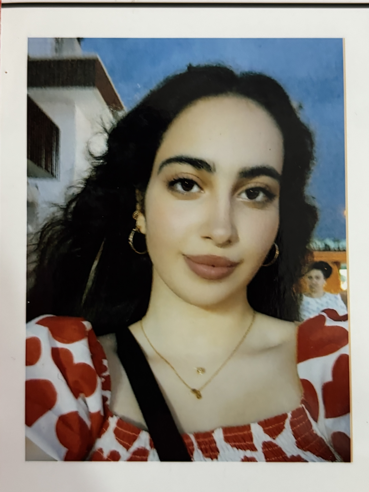
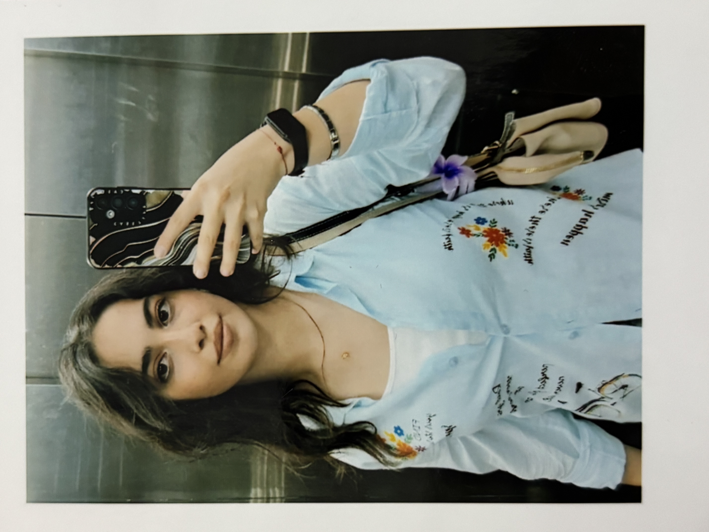
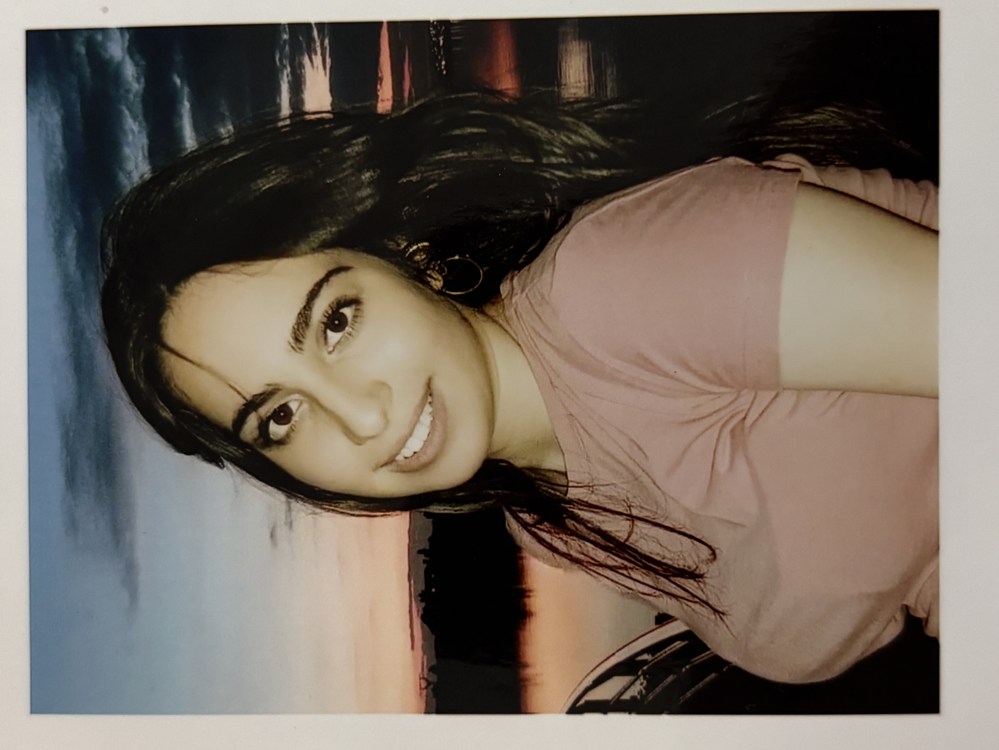
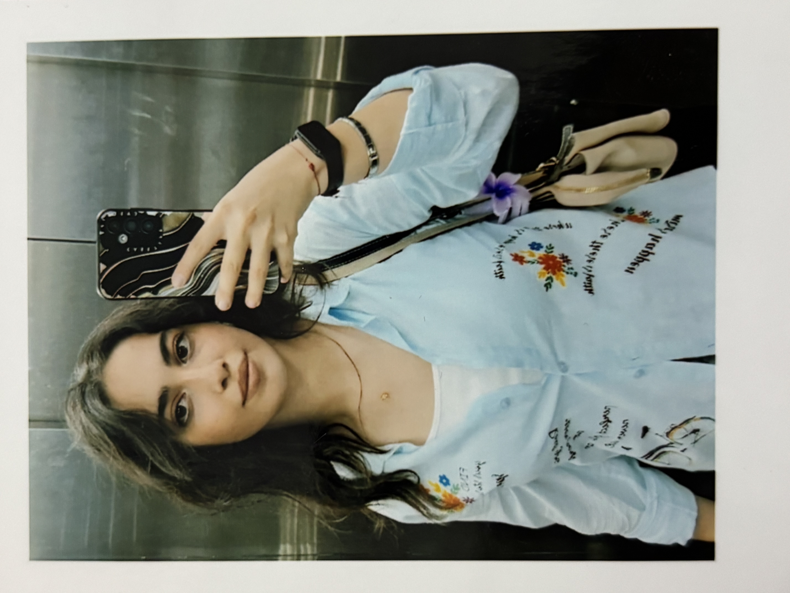
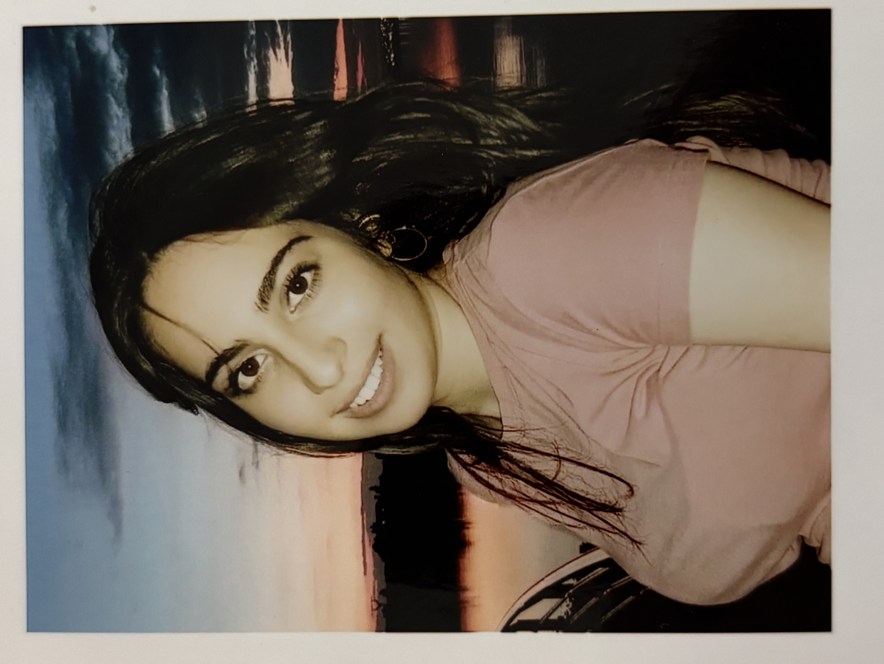
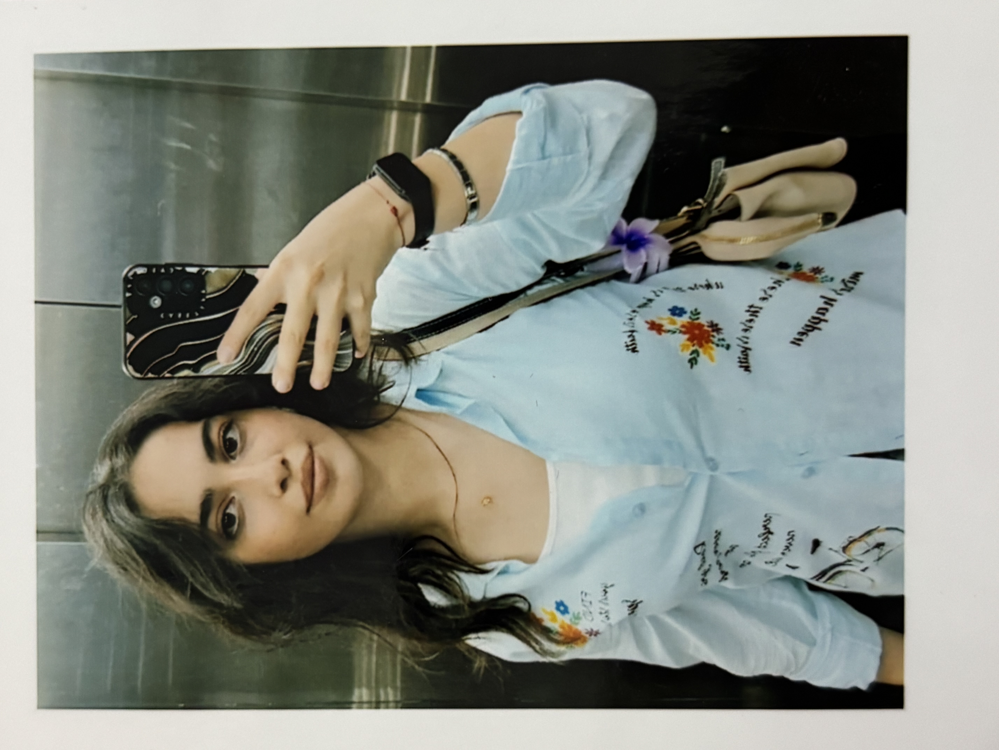
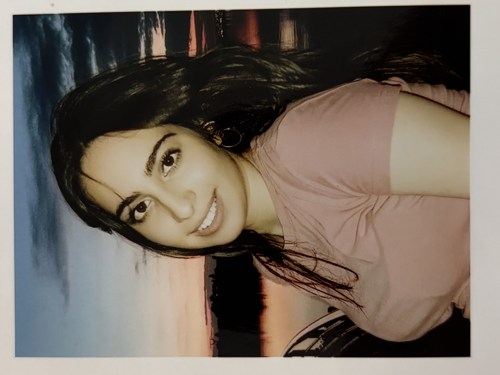

Sevgililər Günün Mübarək, Əfsanəm 🤍
Yaşamaq üçün lazım olan 4 amil

 





Mən bir Əfsanəyə tutulmuşam,
elə bir tutulmuşam ki…
hər şey bir az Əfsanə olub.
Dənizlərin rəngi xoşuma gəlməyəndə
bir az səni düşünürəm —
gözəlləşir.
Saatım ya sənə beş qalır,
ya da səni beş keçir.
Zaman belə adını pıçıldayır.
Hara baxsam sənsən,
gözümü yumsam da sənsən.
Məncə fəsillər dəyişməyib,
biz indi Əfsanə fəslindəyik.
Səhərin işığında gözlərin,
axşamın qızılığında dodaqların var.
Külək belə sənin ətrini gətirir.
Başqa gözəllikdən danışmayın yanımda —
mənim üçün ölçü dəyişib.
Əgər tərifləyəcəksinizsə,
Əfsanəni tərifləyin.
Və mən səni hər gün daha çox sevirəm 🤍
14 Fevral 2026